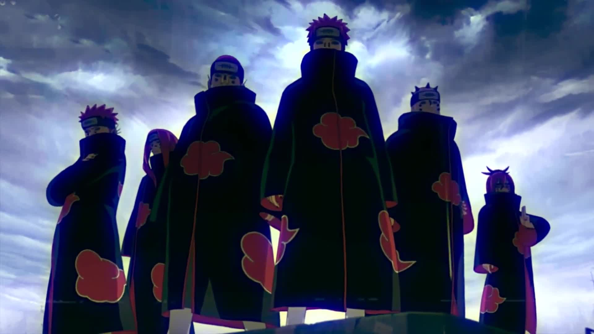

Создание группы
Под верховенством Нагато, члены Акацуки организовывались в группы из двух человек, обычно спаренные на основе воспринимаемых схожих черт (как Итачи и Кисаме) или выгодных комбинаций (как Хидан и Какузу). Хотя некоторые пары лучше ладили друг с другом, мало кто из них на самом деле любил друг друга; в Ша но Шо отмечается, что во время постоя в гостиницах партнёры всегда заказывают две отдельные комнаты. Неприязнь, как правило, существовала даже между членами, которые не являются партнерами, хотя они так редко встречались, что это редко являлось насущной проблемой.[11] Команды путешествовали по миру, преследуя цели Акацуки и собираясь только по вызову Нагато, обычно, чтобы запечатать хвостатого зверя.
Организация была первоначально основана Яхико во время Третьей Мировой Войны Шиноби, вместе с его друзьями детства, Нагато и Конан. Сироты времён Второй Мировой Войны Шиноби, они создали Акацуки в качестве способа принести мир родной деревне Амегакуре, слишком часто выступающей в качестве поля битвы для Пяти Великих Стран Шиноби.[1] Их стремление к прекращению войны привлекло многих ниндзя из Амегакуре к их делу, и со временем слова о их подвигах начали распространятся за пределы Амегакуре. Ранняя слава Акацуки во многом была связана с руководством Яхико и его естественной харизмой, которая удерживала группу в едином целе и побуждала их проявлять упорство, несмотря на трудности своей цели. Однако Яхико считал себя просто посредником для Нагато, который, в конечном счете, станет фактическим источником мира во всем мире из-за своего Риннегана.
Со временем, известность Акацуки стала привлекать к себе нежелательное внимание. К ним впервые обратился Тоби, который утверждал, что он Мадара Учиха и предложил оказать помощь Акацуки, в частности, Нагато. Яхико опасался Тоби и отказался от его предложения, хотя Тоби утверждал, что Яхико в конце-концов согласился.[2] Лидер Амегакуре, Ханзо, также узнал об Акацуки и воспринял их как угрозу своему правительству, убежденность, на которую Данзо Шимура вдохновил его в аниме. Ханзо явился Акацуки, предложив им помочь наладить мир между Деревней Скрытого Листа, Камня и Песка. Однако, когда Яхико, Нагато и Конан прибыли на встречу с ним, они попали в засаду из людей Ханзо и Корня Данзо, которые захватили Конан в заложники и заставили Яхико покончить с собой, чтобы спасти её. Разъярённый смертью Яхико, Нагато призвал Демоническую статую Внешнего Пути и использовал её, чтобы убить своих нападавших, хотя сам Ханзо сбежал. В аниме, другие члены Акацуки узнали о планах Ханзо и попытались предоставить поддержку Яхико и другим. Тоби перехватил их по пути и убил всех.
Дальнейшие действия
С последним вздохом, Яхико доверил стремление к миру Нагато. Нагато, опечаленный смертью Яхико, пришел к выводу, что мир шиноби никогда не согласился бы на мирное существование добровольно и что прежние пацифистские подходы Акацуки были таким образом бесполезны. Он пришел к выводу, что единственный способ отвернуть мир от постоянной войны состоял в том, чтобы заставить его испытать такие катастрофические смерти и разрушения, что он никогда больше не вернётся к идее конфликта. Намереваясь быть тем, кто покажет эти ужасы миру, Нагато начал использовать псевдоним "Пейн" и сформировал "Шесть Путей Пейна", в которые он включил тело Яхико, чтобы он мог символически продолжать возглавлять Акацуки. Нагато разыскал Обито под маской Мадары Учихи и принял его более раннее предложение поддержки, которое он предоставил им втайне. После Третьей Мировой Войны Шиноби, Акацуки начало набирать в свои ряды ниндзя-отступников S-ранга, конкурирующие личности и устремления которых объединились под заявленной Нагато целью мирового господства; вербовка могла быть и отчасти насильной, как в случае Дейдары. Как только Акацуки набрало целевой состав из десяти членов, оно начал следовать трехэтапному процессу достижения этой заявленной цели:
Ранние годы Акацуки Нагато были очень успешными, так как скрытые деревни все чаще нанимали Акацуки для сражения в войнах и совершения убийства, в которых сами деревни не хотели участвовать в мирное время. Четвёртый Райкаге утверждал, что только Кумогакуре никогда не нанимало Акацуки, в то время как Третий Цучикаге, в частности, стал довольно частым их работодателем. Несмотря на то, что Акацуки было такой популярной и успешной группой, оно в значительной степени оставалось сокрыто тайной для тех, кто находится за пределами организации, причем многие (ошибочно) полагали, что они действовали из Киригакуре. На протяжении многих лет Акацуки испытывало некоторые внутренние беспорядки среди своих членов: Какузу регулярно убивал своих партнеров в припадках гнева и крал их сердца для своего Страха Земного Гнева,[4] и только получение в напарники бессмертного Хидана покончило с этой тенденцией. Орочимару попытался завладеть телом Итачи Учихи после того, как последний присоединился к организации, и когда это не удалось, он был вынужден покинуть организацию. Несмотря на это, Акацуки смогло начать работу в направлении захвата хвостатых зверей. Фактическая цель Нагато по приобретению хвостатых зверей заключалась в том, чтобы использовать чакру хвостатых зверей для создания мощного киндзюцу, используя его, чтобы уничтожать одну из сторон в конфликте и, с помощью этой демонстрации, устрашать другую сторону и мир в целом, тем самым останавливая борьбу. Если когда-нибудь этот страх исчезнет, и конфликты будут возобновлены, киндзюцу снова будет применяться, добиваясь небольших периодов покоя в бесконечной цепочке ненависти.[5] Поскольку все хвостатые звери, кроме одного, находились во владении скрытых деревень, их захват содержал в себе риск настроить против себя многих из бывших клиентов Акацуки. Несмотря на это, Дейдара утверждал, что предыдущие владельцы первых двух хвостатых, захваченных Акацуки (аниме подразумевает, что это были Пятихвостый и Семихвостый), были рады избавиться от них.
Миссия Акацуки по захвату хвостатых зверей постепенно поднимает их из теней мира и, в свою очередь, вызывает растущее сопротивление со стороны скрытых деревень. После того, как Дейдара захватывает Однохвостого, Сасори был убит в битве против сил Суны и Конохи, отправленными на спасение джинчуурики Однохвостого. Обито использует его пустующую позицию как возможность официально присоединиться к Акацуки в качестве "Тоби", помогая им захватить Трёххвостого. Примерно в то же время Хидан и Какузу захватывают Двуххвостого, но оба они впоследствии были побеждены в столкновениях с отрядами Двадцати Взводов Конохи. Кисаме Хошигаки позже приобретает Четырёххвостого, после чего и Дейдара, и Итачи по отдельности погибают в сражениях против Саске Учихи. Из-за их сокращающегося количества членов Тоби заставляет Нагато принять более активную роль в захвате оставшихся хвостатых зверей. В аниме, он и Конан сначала отправляются захватить Шестихвостого, который был захвачен в какой-то более ранний момент в манге. Затем они направляются в Коноху, чтобы захватить Девятихвостого, и в ходе соответствующего Нападения Пейна деревня была разрушена. Когда Нагато, наконец, находит и встречается с джинчуурики Девятихвостого, Наруто Узумаки, он начинает сомневаться в направлении, в котором повёл Акацуки с момента смерти Яхико. После того, как Шесть Путей Пейна Нагато потерпели поражение, Наруто убеждает его, что бескровный мир стоит преследовать независимо от того, насколько невозможным это кажется. Чтобы искупить все ошибки, которые он совершил, Нагато жертвует своей жизнью, чтобы оживить жителей Конохи, которые умерли во время его нападения, и с последним вздохом, завещать Наруто достичь мира, которого он сам никогда не добился. Теперь, когда Яхико и Нагато больше не было среди живых, Конан решает покинуть Акацуки.
Тоби становится во главе группы
Тоби явился к Акацуки, чтобы приблизиться к Нагато, чей Риннеган ему нужен был для завершения Плана Глаз Луны. На протяжении многих лет он оставался в тени, позволяя Нагато появляться в мире в качестве лидера Акацуки, пока Обито манипулировал для приведения к своим желаемым целям, в частности, захвату всех девяти хвостатых зверей, чтобы воскресить Десятихвостого и использовать его для применения Бесконечного Цукуёми на всём мире, покончив со всеми конфликтами путём заключения всех в вечный сон. Обито следовал Плану Глаз Луны по указанию настоящего Мадара Учихы, чью личность Обито принял на себя после смерти Мадары. Мадара планировал, что Обито заставит Нагато воскресить его на заключительных этапах плана, хотя Обито не собирался держаться этой части плана и намеревался использовать Нагато для возвращения к жизни себя самого, если с ним что-нибудь случится. Однако это намерение было сорвано Нагато, который предал Обито и использовал Технику Небесной Жизненни Самсары, чтобы оживить всех, кого он убил во время своего вторжения в Коноху.
Еще до смерти Нагато, Обито все более активно участвует в деятельности Акацуки, в значительной степени благодаря смерти Итачи Учихи. Он раскрывает себя Кисаме, который работал с ним во время своего пребывания в Киригакуре и с удовольствием сотрудничает с ним снова. Он также убеждает Саске Учиху и его команду Така объединить силы с Акацуки, альянс, который, по мнению Обито, стоил потерь остальных членов Акацуки. В то время как Нагато отправляется за Девятихвостым, Обито поручает Така захватить Восьмихвостого, единственного другого оставшегося хвостатого зверя. Хотя изначально кажется, что Така успешно справилась с задачей, позже обнаруживается, что они были обведены вокруг пальца джинчуурики Восьмихвостого, Киллером Би. Когда Зецу вскоре сообщает о собственной смерти Нагато, Обито был сильно взволнован неудачами, в частности изменением Нагато, и его всё больше раздражает, что Наруто постоянно срывает его планы. Так как их ряды резко уменьшились, а Пять Великих Стран Шиноби, наконец, начали сплачивать силы против Акацуки, по причине как нападения на Коноху, так и неудачного захвата Киллера Би, Обито был вынужден принимать решительные действия. Сначала он посылает Кисаме захватить Би, а затем отправляет Таку напасть на Собрание Пяти Каге. Саске не слишком успешно сражается против Пяти Каге, как этого хотел Обито, поскольку он надеялся, что Саске ослабит их настолько, что это заставит их начать переговоры. Вместо этого, ему пришлось попробовать дипломатический подход по отношению к ним, попросив, чтобы они помогли ему завершить План Глаз Луны добровольной сдачей Восьмихвостого и Девятихвостого. Они отказываются, вынуждая Обито объявить начало Четвертой Мировой Войны Шиноби.
Во время подготовки к войне, к Обито обращается Кабуто Якуши, бывший подчиненный Сасори и Орочимару. Кабуто предлагает усилить боевую мощь Акацуки своим Нечистивым Воскрешением, воскресив бывших членов Акацуки и многих других знаменитых шиноби. Обито не желает сотрудничать пока Кабуто не начинает его шантажировать, воскрешая настоящего Мадару Учиху, благодаря использованию имени которого Обито делал более правдоподобными угрозы против скрытых деревень. Обито приходится согласиться. Затем он отправляется в Амегакуре, чтобы забрать Риннегана Нагато, убив Конан в процессе. До них в конечном итоге доходят новости о смерти Кисаме, но Кисаме, по крайней мере, удалось отправить им информацию, которая позволяет Кабуто усилить армию Белых Зецу.[6] В течение двух дней войны между Акацуки и Союзными Силами Шиноби, обе стороны страдают от тяжелых потерь, но Наруто и Киллер Би избегают захвата. Когда большая часть армии Белых Зецу потерпела поражение, и Кабуто вынудили отменить Нечистивое Воскрешение, Обито, лишённый других возможностей, преждевременно возрождает Десятихвостого. Мадара, также воскрешённый Кабуто, освободившись от его влияния, оказывает некоторую поддержку, что в конечном счете позволяет Обито стать джинчуурики Десятихвостого. Он был побежден Наруто Узумаки и Саске (который на то время уже обернулся против Акацуки), прежде, чем он смог исполнить Бесконечное Цукуёми, и в результате Обито прекращает преследовать План Глаз Луны. После капитуляции Обито, проекты Акацуки официально заканчиваются. Мадара упорствует, запечатывая Десятихвостого в своё тело и успешно активировав Бесконечное Цукуёми. Затем его предаёт Чёрный Зецу, который на протяжении веков пытался воскресить Кагую Ооцуцуки, а Мадара, затем Обито и само Акацуки были всего лишь пешками, используемыми для достижения этой цели.[7] Кагуя возвращается к жизни, используя Мадару в качестве сосуда, но с помощью Обито, она и Чёрный Зецу были побеждены Наруто и Саске, а Бесконечное Цукуёми было ими развеяно. Дальше можете узнать здесь...